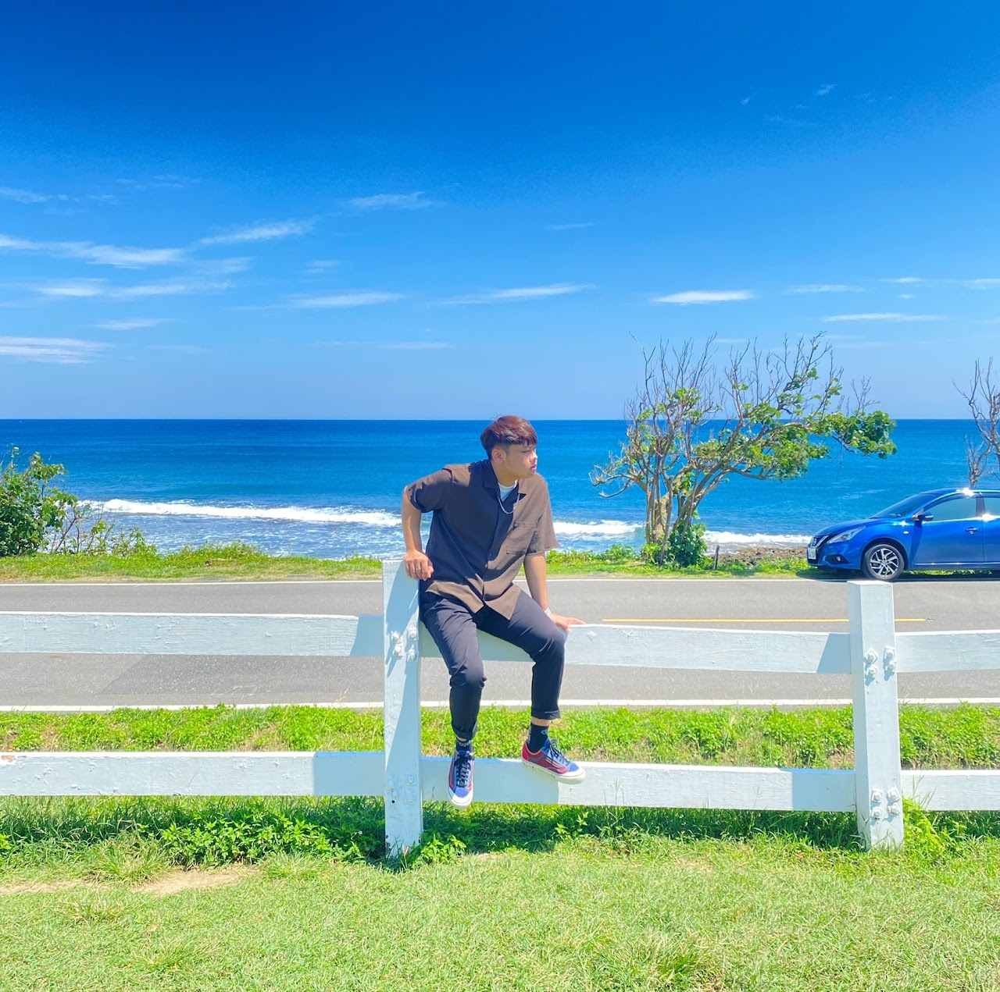

陳杰龍的筆記網站
陳杰龍的筆記網站 主頁
主頁 歸檔
歸檔 分類
分類 其他
其他 關於我
關於我關於我

姓名：陳杰龍
目前就讀： 國立屏東大學 資訊管理學系
E-Mail : zaq5891097@gmail.com
寫筆記網站的核心與記錄的意義：
一路上經歷的事情一變多，常常會把許多回憶丟在路邊繼續向前進，
等已走到這條路的終點時卻忘記自己這一路上到底過不過得開心快不快樂，自己活得這麼累的原因是甚麼。
為了在讓我走到這條路的終點時還可以記得自己一路上的過程與回憶而持續努力到現今。
Start：2022/9/30